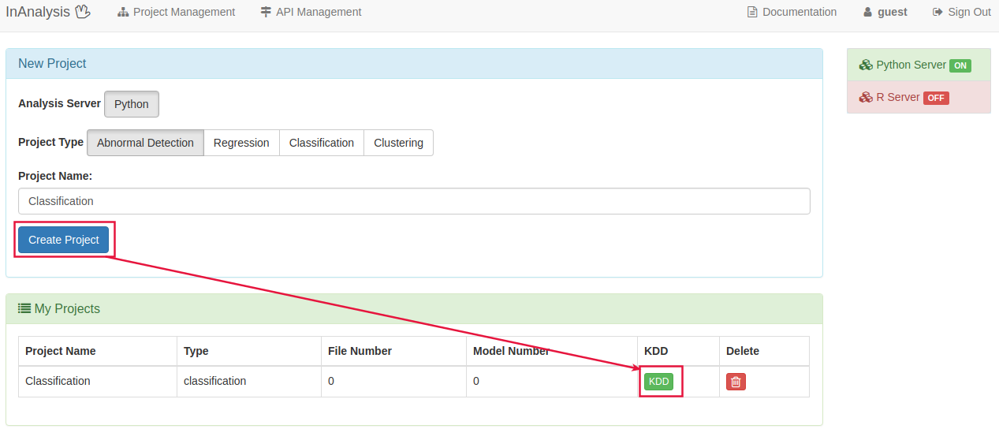
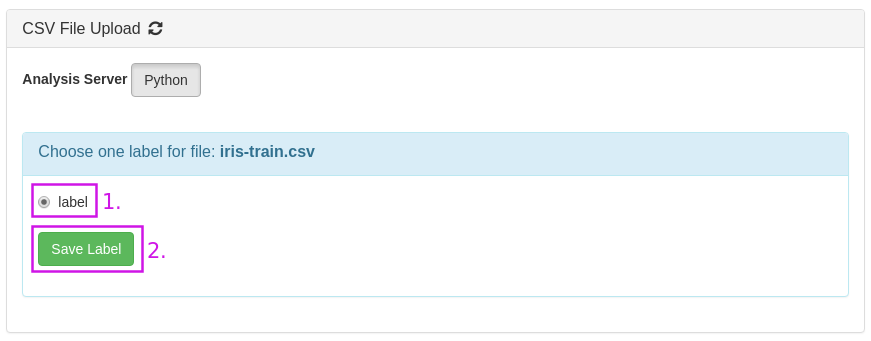
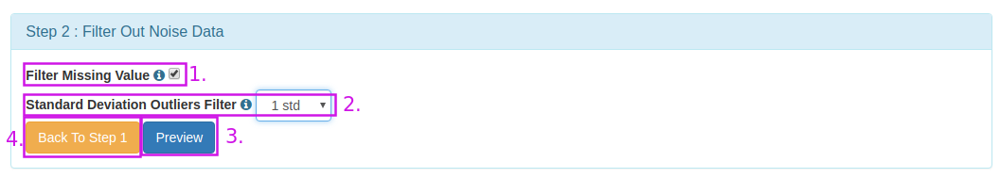
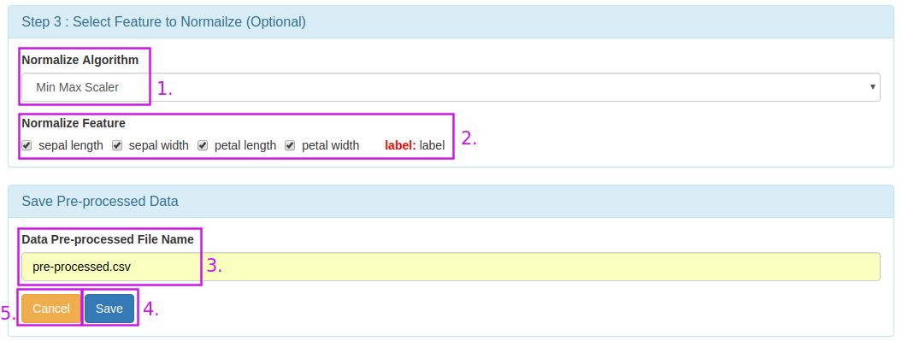
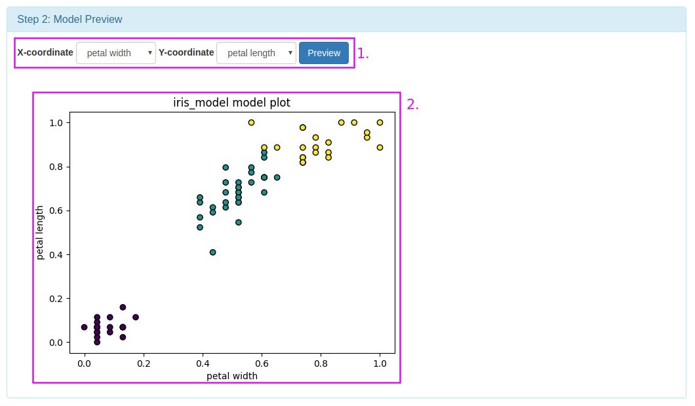
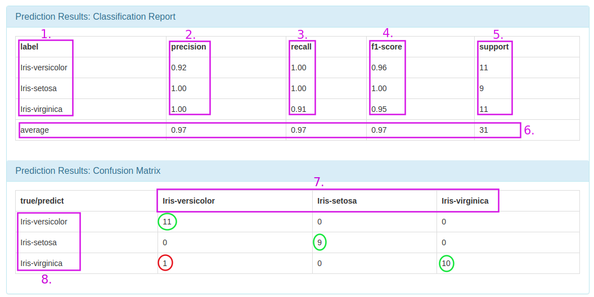
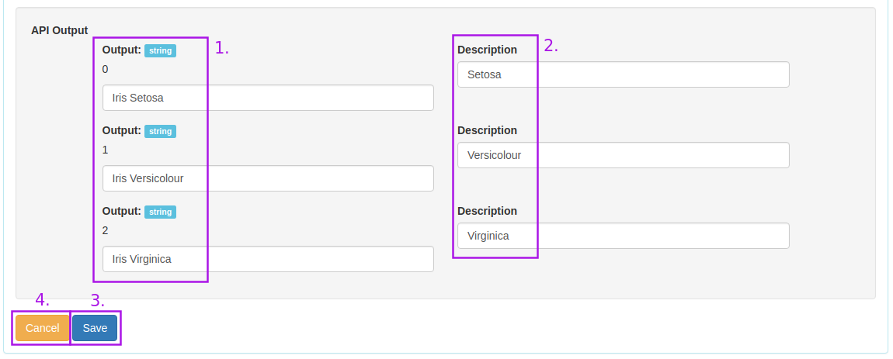

Introduction
分類是根據已知樣本的某些特徵，判斷一個新的樣本屬於哪種已知的樣本類。分類問題也被稱為監督式學習 (supervised classification)，根據已知訓練區提供的樣本，通過計算選擇特徵參數，建立判別函數以對樣本進行的分類。
Classification is an instance of supervised learning which is done based on certain characteristics of a known sample to determine which known sample class a new sample belongs to. Based on the samples provided in the known training area, the selection of feature parameters is calculated and a discriminant function is established to classify the samples.
Example
欲解決的問題 Problem to be solved:
由iris的sepal(萼片)長寬和petal(花瓣)長寬來分類iris的種類
The type of iris is classified by iris's sepal length and width and petal's
length and width.
 Iris sepal and petal
Iris sepal and petal
資料欄位說明 Data field description:
1. sepal (萼片) length in cm
2. sepal (萼片) width in cm
3. petal (花瓣) length in cm
4. petal (花瓣) width in cm
5. class:
-- Iris Setosa
-- Iris Versicolour
-- Iris Virginica
資料來源 Source:
UC Irvine Machine Learning Repository: Iris Data Set
建立訓練資料 Training Dataset:
下載iris-train.csv作為訓練檔（下載 2.2 kB ）
Download iris-train.csv as a training file (Download 2.2 kB)
建立測試資料 Test Dataset:
下載iris-test.csv作為測試檔（下載 0.6 kB ）
Download iris-test.csv as a test file (Download 0.6 kB)
模型建立方法 Build Predictive Model:
用knn演算法建立預測模型
Using knn algorithm to establish prediction model
模型結果預覽 Model Results Preview:

Step by Step
跟著以下流程操作示範，即可輕鬆建立Iris資料分類模型 [ 整個流程約5分鐘 ]
Following the following process demonstration, you can easily create Iris data classification model
[about 5 minutes for the entire process]
1.建立專案 Create Project
建立Classification Project以進行KDD流程訓練模型，並可將模型Export成API
Establish Classification Project for KDD process training model and export the model into API

InAnalysis User Dashboard
1. 回到InAnalysis User Dashboard （InAnalysis to go back to User Dashboard）
2. 進入Project Management, 可新增、修改、刪除Project （Project Management to add, modify or delete Project）
3. 進入API Management, 可新增、修改、刪除API （API Management to add, modify or delete API）
4. Documentation, 教學網站連結與範例資料檔案 （Documentation to display website tutorial and sample data file）
5. Machine Learning Server Situation, 顯示Server是否正常啟動 （Machine Learning Server Status to display which server is being used）
6. Number of Projects, 顯示使用者建立的Project數量 （Total Projects to display number of Projects created by the user.）
7. 進入Project Management, 可新增、修改、刪除Project （Project Management to add, modify or delete Project）
8. Number of API, 顯示使用者建立的API數量 （Total API to display number of APIs created by users）
9. 進入API Management, 可新增、修改、刪除API （API Management to add, modify, delete API）
我們在這個頁面點選2.或是7.進入Project Management, 開始機器學習的流程
We click on this page 2. or 7. Enter Project Management to start the machine learning process
Project Management
1. 選擇Project Type, 四種Project Type有不同的任務 (Select Project Type out of the four available tasks based on your requirement)
2. 輸入Project的名稱 (Enter Project Name)
3. 新增Project (Click Create Project)
建立分類專案 Create a Classification project

成功新增Project後點選KDD, 開始機器學習的流程
Click KDD after successfully adding Project to start the machine learning process
2.檔案上傳 Data Input
上傳csv資料檔案以進行KDD流程
Upload .csv data file for KDD process
KDD：Data Input
1. 點選可看到KDD各個流程的詳細說明 (Click to see the detailed description of each process of KDD)
2. 提示欄，建議使用者下一個步驟可以做什麼 (Prompt bar, suggest the user can do the next step)
3. Model Management，這個Project訓練出來的所有模型可在這邊瀏覽，修改資訊或Export成API (Model Management, all models trained by this Project can be browsed here, modify Information or Export into API)
4. 選擇資料上傳的階段 (Select the stage for uploading data)
5. 從本機端選擇資料 (Select data from the local computer)
6. 點選進行資料上傳 (Click to upload data)
7. 顯示Server是否正常啟動 (Display whether the server starts normally)
KDD：Data Input - select label column
1. 選擇作為標記的資料（Classification可以作為標記的資料類型為：整數、浮點數、字串）(Select the data to be marked (Classification can be used as a marker data type: integer, floating point, string))
2. 儲存檔案(Save the file)
上傳完成會看到該資料的操作欄位
Upload complete will see the operation of the data field
Data Information
1. 顯示上傳資料的檔案名稱 (Display the file name of the uploaded data)
2. 點選可看到該資料的操作紀錄說明 (Click to see the operation record done for the data)
3. 顯示該資料所在的Server (Display the server where the data is located)
4. 顯示資料欄位數量 (Display the data field number)
5. 顯示該資料被設為標籤的欄位名稱，若該資料無標籤則顯示「No Label」(Display the field where the data is set as the label Name, if there is no label in the data, "No Label" will be displayed)
6. 點選按鈕可對該資料進行各項操作處理，綠色為系統建議的下一步操作 (Click the button to perform various operations on the data. Green color suggests the next step that should be taken.)
7. 點選預覽整份資料 (Click to preview the entire data)
8. 點選可下載資料 (Click to download Data)
9. 點選會將該資料刪除 (Click to delete the data)
我們點選7.Preview來預覽整份資料
We click on 7.Preview to preview the entire data
Data Viewer
1. 正在預覽的資料檔案名稱，與檔案所在的Server (The name of the data file being previewed, and the server where the file is located)
2. 顯示該資料的所有欄位名稱 (Show all field names of the data)
3. 顯示該欄位的第一項資料 (Display the first data of this field)
4. 顯示該欄位的資料型態 (Display the data type of this field)
5. 顯示該欄位的資料平均值，若為非數值型態則會顯示「-」(Display The average value of the data in this field, if it is a non-numeric type, it will show "-")
6. 顯示該欄位的資料標準差，若為非數值型態則會顯示「-」 (The standard deviation of data in this field will be displayed. If it is a non-numeric type, "-" will be displayed)
7. 點選可看到該欄位的所有資料分佈直方圖 (Click to see All data distribution histogram for this field)
8. 點選回到KDD流程 (Click to return to KDD process)
3.資料前處理 Data Pre-process
這個步驟可對資料進行缺值過濾、常態分佈離群值過濾、正規化等預處理
從Function欄位中, 選擇Data Pre-processing按鈕, 開始進行資料預處理(Pre-process)
This step can be used to preprocess the data such as missing value filtering, normal distribution
outlier filtering, and normalization.
From the Function field, select the Data Pre-processing button and start data preprocessing
Step 1
1. 正在處理的資料檔案名稱，與檔案所在的Server (The name of the data file being processed, and the server where the file is located)
2. 選擇欄位 (Select the field)
3. 預覽該欄位的資料分佈直方圖 (Preview the data distribution histogram for this field)
4. 取消回到KDD流程頁面 (Cancel back to the KDD process page)
Step 2
1. 對資料進行缺值過濾，如果該列資料有NAN則會刪除該列資料，這個步驟能夠確保訓練時不會因為資料不齊全而出現錯誤(Impose the value filter for the data. If there is a NaN in the column, the data will be deleted. This step can ensure that the training will not be wrong because the data is not complete.)
2. 對該欄位資料進行利用常態分佈離群值過濾，1 std表示將過慮掉1個標準差以外的離群資料，0 std表示不對資料做離群值過濾(Use the normal distribution of the data in the field. Outlier filtering, 1 std indicates that outlier data other than one standard deviation will be taken into account, 0 stdindicates that outlier filtering is not performed on the data.)
3. 執行上述處理並預覽該欄位處理過後的資料分佈直方圖(Perform the above processing and preview Data distribution histogram after this field is processed.)
4. 取消處理動作回到Step 1選擇欄位(The processing operation is canceled and Step 1 is selected.)
Step 3
1. 選擇Normalize的演算法(Select Normalize's algorithm)
2. 選擇欲進行Normalize的資料欄位，進行Normalize能夠將資料Scale到相同的range(Select the data field you want to Normalize. Normalize can scale the data to the same range)
3. 輸入處理過資料的新檔案名稱(Enter the new file name of the processed data.)
4. 儲存處理過的新資料，並回到KDD流程頁面(Save the processed new data, and Go back to the KDD process page)
5. 取消處理動作，不儲存處理過的新資料，並回到KDD流程頁面(Cancel the processing action, do not save the processed new data, and return to the KDD process page)
這個範例將資料進行正規化，然後將Pregnant_times缺值過濾、常態分佈離群值過濾處理。
（下載 檔案觀察資料變化，1.8 kB）。
處理後的檔案成功儲存後回會到KDD頁面,進行下一步特徵選擇
This paradigm normalizes the data and then filters the Prevalence_times value-deficient filter and the normal distribution outlier filter. (Download file observations change, 21.5 kB). After the processed file is successfully saved, it will return to the KDD page for the next feature selection.
4.特徵選擇 Feature Selection
這個步驟是利用Pearson Correlation演算法計算各個Feature間的關係程度,以作為選擇Feature的參考
This step is to use the Pearson Correlation algorithm to calculate the degree of relationship
between
each Feature as a reference for selecting Feature.
KDD：Feature Selection
1. 提示欄，說明剛剛成功儲存了pre-processed過的檔案(Prompt bar stating that the pre-processed file has been successfully saved)
2. pre-processed過的新檔案(The pre-processed new file)
3. 功能欄現在建議對該檔案進行Feature Selection的動作(The function bar now proposes a Feature Selection action on this file.)
我們從功能欄點選Feature Selection，開始進行特徵選擇
We select Feature Selection from the function bar to start feature selection
Feature Selection
1. 正在進行特徵選擇的資料檔案名稱，與檔案所在的Server(The name of the data file for feature selection, and the server where the file is located)
2. 選擇計算特徵關係係數的演算法(Select the algorithm for calculating the feature-relation coefficient)
3. 顯示該欄位的資料平均值(Display the average value of the data in this field)
4. 顯示該欄位的資料標準差(Display the data standard deviation for this field)
5. 顯示該欄位的平均關係係數(Display the average correlation coefficient for this field)
6. 顯示該欄位對應其它欄位的關係係數(Display the correlation coefficient of this field with the other fields.)
7. 選擇要留下來的特徵(Select the feature to leave.)
8. 輸入新檔案名稱(Enter the new file name.)
9. 儲存新資料，並回到KDD流程頁面(Save the new data and return to the KDD process page. Save and return to KDD process)
10. 不儲存並回到KDD流程(Cancel and back to KDD)
這個範例選擇sepal length, petal length, petal width 這三個特徵（
下載 檔案觀察資料變化，2.0 kB）。
This example selects the three characteristics of sepal length, petal length, and petal width
(download> file observation data changes, 2.0 kB).
為了比較欄位的效果,再做一次Feature Selection,這次四個特徵全選, 成功儲存後回到KDD頁面可以看到有兩個檔案有不同的欄位數量,進行下一步模型訓練
In order to compare the effect of the field, do a Feature Selection once again. This time all the four features are selected. After successfully saving and returning to the KDD page, you can see that there are two files with different number of fields for the next model training.
5.模型訓練 Model Training
這個步驟能夠選擇演算法對資料進行模型訓練，並預覽訓練出來的模型
This step can select algorithms to model the data and preview the trained models
Model Training
1. 正在進行模型訓練的資料檔案名稱，與檔案所在的Server(The name of the data file that is being model-trained, and the server where the file resides.)
2. 選擇模型訓練的演算法(Select the model training algorithm)
3. 設定演算法參數，或直接使用預設值(Set the algorithm parameters, or use the default value directly)
4. 輸入模型名稱(Enter the model name)
5. 進行模型訓練(Perform the model training)
6. 回到KDD流程(Back to KDD process)
Model Preview
1. 選擇兩個資料欄位(Select two data fields)
2. 顯示訓練好的模型圖(Display trained model diagram)
訓練出來的模型可以在Model Management頁面管理
Trained models can be managed on the Model Management page
Model Management
1. 模型名稱(Model name)
2. 模型訓練使用的演算法(Algorithm used for model training)
3. 訓練使用的檔案及參數(Files and parameters used for training)
4. 將模型匯出成API(Export model to API)
5. 修改模型資料(Modify model data)
6. 刪除模型(Delete model)
6.模型預測 Model Prediction
這個步驟能夠利用已經訓練好的模型對新的資料進行預測，並顯示預測分類的結果及準確度
This step can use the already trained model to predict new data and show the results and accuracy of
the predictive classification.
Select Model to Predict
1. 模型名稱(Model name)
2. 模型訓練使用的演算法(Algorithm used for model training)
3. 訓練使用的檔案及參數(Files and parameters used for training)
4. 勾選一個模型來進行預測(Check a model to make predictions)
5. 進行預測(Make predictions)
6. 取消回到KDD流程(Cancel back to KDD process)
Prediction Result
[ Classification Report ] 公式說明參考連結
[Calenism Report] Formula Description Reference Link
1. 類別名稱(Class Name)
2. precision:精確率的公式是P=TP/(TP+FP),計算的是所有"正確預測的物件(TP)"占所有"預測成這個類別的物件(TP+FP)"的比例.(precision: The formula for the accuracy rate is P=TP/(TP+FP), which calculates that all "properly predicted items (TP)" account for all "prediction" The proportion of items in this category (TP + FP).)
3. recall:召回率的公式是R=TP/(TP+FN),計算的是所有"正確預測的物件(TP)"占所有"應該被預測到的物件(TP+FN)"的比例。(recall: The formula for the recall rate is R = TP / (TP + FN), and the calculation is that all "properly predicted items (TP)" account for all "should be The proportion of predicted items (TP+FN).)
4. f1-score:F1值就是精確率和召回率的調和均值,也就是F1=2*TP/(2*TP+FP+FN)(f1-score: The F1 value is the harmonic mean of the precision rate and recall rate, that is, F1=2*TP/(2*TP+FP+FN))
5. support:這個類別被預測到的數量(support: The quantity predicted for this category)
6. 所有類別的平均預測表現(Average: The average prediction performance)
[ Confusion Matrix ]
7. 模型預測出來的標籤(The label predicted by the model)
8. 使用者給定的正確標籤(The correct label given by the user)
* 綠色圈起來斜對角的部份代表"正確預測的數量"
* 其餘的部份是預測錯誤，例如圖中的紅色圈圈代表有一筆資料被預測成Iris-versicolor這個類別，但實際上應該是Iris-verginica
* The diagonally green part of the circle represents the "correct predicted quantity"
* The rest is prediction errors. For example, the red circle in the figure indicates that there is a piece of data predicted to be Iris-versicolor, but it should actually be Iris- verginica.
7.建立API Export API
這個步驟能夠將訓練好的模型建立成API，以利更多的應用
This step can build a trained model into an API for more applications

Set API Input
1. 輸入API的名稱，以及API功能描述(Name of the input API, and description of the API function)
2. 輸入自訂的API Input Key(Input custom API Input Key)
3. 輸入API Input描述(Input API Input Description)
Set API Output
1. 輸入自訂的API Output Key(Enter the custom API Output Key)
2. 輸入API Output描述(Enter the API Output description)
3. 儲存並建立API(Save and create the API)
4. 不儲存回到Model Management(Do not save back to Model Management)
建立API後，會顯示API呼叫URL以及API輸入輸出的json格式
After the API is created, the API call URL and API input/output json format are displayed
Show API Format
1. API的名稱(API Name)
2. API的呼叫路徑(API Call Path)
3. API Input格式(API Input Format)
4. API Output格式(API Output Format)
點選上方功能列的API ，可以檢視全部建立好的API
Click on the API above to view all established APIs

API Management
1. 輸入API的名稱(Enter the name of the API)
2. API功能描述(API function description)
3. API建立資訊(API creation information)
4. 編輯API(Edit API)
5. 刪除API(Delete API)
Machine Learning Canvas機器學習畫布
Machine Learning Canvas(機器學習畫布)的框架分為4個部分：問題定義、模型預測、模型學習和系統評估， 這個畫布能夠幫助機器學習團隊釐清開發應用時所會面臨的問題

Machine Learning Canvas_空白畫布可由此下載